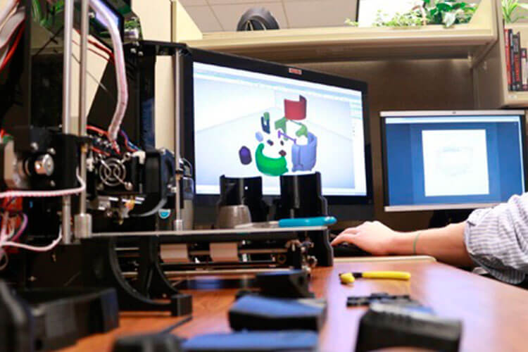

1. Contexto científico
Articulos originales
Interruptor mecánico de alta sensibilidad para el acceso de comunicación aumentativa y alternativa en personas con esclerosis lateral amiotrófica
LeMMS es un nuevo sensor de conmutación que permite a las personas que padecen ELA utilicen sus dispositivos de comunicación alternativa incluso cuando estos se encuentran en la fase avanzada de dicha enfermedad.Asimismo, LeMMS posee un interruptor mecánico de resorte magnético de palanca que gracias a sus ciclos de activación/ liberación repetitivos no necesita de una fuerza de activación grande.
Uso de SSVEP BCI y seguimiento ocular por personas con ELA en etapa tardía y deficiencias visuales
Interruptor mecánico de resorte magnético de palanca (LeMMS), que permite ciclos repetidos de activación / liberación que requieren una fuerza de activación muy pequeña. Se aplicó y validó el LeMMS en un grupo de 20 pacientes que empleaban otros sensores para la comunicación, pero que ya no podían operar sus sensores. Después de una sesión de entrenamiento,todos los pacientes pudieron operar el LeMMS con un movimiento residual mínimo de un dedo.
Comunicación estable a largo plazo habilitada por BCI en ALS y síndrome de bloqueo mediante señales LFP
Interruptor mecánico de resorte magnético de palanca (LeMMS), que permite ciclos repetidos de activación / liberación que requieren una fuerza de activación muy pequeña. Se aplicó y validó el LeMMS en un grupo de 20 pacientes que empleaban otros sensores para la comunicación, pero que ya no podían operar sus sensores. Después de una sesión de entrenamiento,todos los pacientes pudieron operar el LeMMS con un movimiento residual mínimo de un dedo.
Gafas Morse: un sistema de comunicación IoT basado en código Morse para usuarios con problemas de habla
Interruptor mecánico de resorte magnético de palanca (LeMMS), que permite ciclos repetidos de activación / liberación que requieren una fuerza de activación muy pequeña. Se aplicó y validó el LeMMS en un grupo de 20 pacientes que empleaban otros sensores para la comunicación, pero que ya no podían operar sus sensores. Después de una sesión de entrenamiento,todos los pacientes pudieron operar el LeMMS con un movimiento residual mínimo de un dedo.
TeleBCI: capacitación, monitoreo y comunicación de usuarios remotos con una interfaz cerebro-computadora de potencial evocado
Interruptor mecánico de resorte magnético de palanca (LeMMS), que permite ciclos repetidos de activación / liberación que requieren una fuerza de activación muy pequeña. Se aplicó y validó el LeMMS en un grupo de 20 pacientes que empleaban otros sensores para la comunicación, pero que ya no podían operar sus sensores. Después de una sesión de entrenamiento,todos los pacientes pudieron operar el LeMMS con un movimiento residual mínimo de un dedo.
Interruptor mecánico de alta sensibilidad para el acceso de comunicación aumentativa y alternativa en personas con esclerosis lateral amiotrófica
Interruptor mecánico de resorte magnético de palanca (LeMMS), que permite ciclos repetidos de activación / liberación que requieren una fuerza de activación muy pequeña. Se aplicó y validó el LeMMS en un grupo de 20 pacientes que empleaban otros sensores para la comunicación, pero que ya no podían operar sus sensores. Después de una sesión de entrenamiento,todos los pacientes pudieron operar el LeMMS con un movimiento residual mínimo de un dedo.
Interruptor mecánico de alta sensibilidad para el acceso de comunicación aumentativa y alternativa en personas con esclerosis lateral amiotrófica
Interruptor mecánico de resorte magnético de palanca (LeMMS), que permite ciclos repetidos de activación / liberación que requieren una fuerza de activación muy pequeña. Se aplicó y validó el LeMMS en un grupo de 20 pacientes que empleaban otros sensores para la comunicación, pero que ya no podían operar sus sensores. Después de una sesión de entrenamiento,todos los pacientes pudieron operar el LeMMS con un movimiento residual mínimo de un dedo.
Interruptor mecánico de alta sensibilidad para el acceso de comunicación aumentativa y alternativa en personas con esclerosis lateral amiotrófica
Interruptor mecánico de resorte magnético de palanca (LeMMS), que permite ciclos repetidos de activación / liberación que requieren una fuerza de activación muy pequeña. Se aplicó y validó el LeMMS en un grupo de 20 pacientes que empleaban otros sensores para la comunicación, pero que ya no podían operar sus sensores. Después de una sesión de entrenamiento,todos los pacientes pudieron operar el LeMMS con un movimiento residual mínimo de un dedo.
Interruptor mecánico de alta sensibilidad para el acceso de comunicación aumentativa y alternativa en personas con esclerosis lateral amiotrófica
Interruptor mecánico de resorte magnético de palanca (LeMMS), que permite ciclos repetidos de activación / liberación que requieren una fuerza de activación muy pequeña. Se aplicó y validó el LeMMS en un grupo de 20 pacientes que empleaban otros sensores para la comunicación, pero que ya no podían operar sus sensores. Después de una sesión de entrenamiento,todos los pacientes pudieron operar el LeMMS con un movimiento residual mínimo de un dedo.
Interruptor mecánico de alta sensibilidad para el acceso de comunicación aumentativa y alternativa en personas con esclerosis lateral amiotrófica
Interruptor mecánico de resorte magnético de palanca (LeMMS), que permite ciclos repetidos de activación / liberación que requieren una fuerza de activación muy pequeña. Se aplicó y validó el LeMMS en un grupo de 20 pacientes que empleaban otros sensores para la comunicación, pero que ya no podían operar sus sensores. Después de una sesión de entrenamiento,todos los pacientes pudieron operar el LeMMS con un movimiento residual mínimo de un dedo.
Interruptor mecánico de alta sensibilidad para el acceso de comunicación aumentativa y alternativa en personas con esclerosis lateral amiotrófica
Interruptor mecánico de resorte magnético de palanca (LeMMS), que permite ciclos repetidos de activación / liberación que requieren una fuerza de activación muy pequeña. Se aplicó y validó el LeMMS en un grupo de 20 pacientes que empleaban otros sensores para la comunicación, pero que ya no podían operar sus sensores. Después de una sesión de entrenamiento,todos los pacientes pudieron operar el LeMMS con un movimiento residual mínimo de un dedo.
LeMMS
Se aplicó el LeMMS en un grupo de 20 personas que padecen ELA en estadío avanzado de dicha enfermedad.Cabe resaltar que todos los participantes ya habían usado dispositivos de ayuda de comunicación que empleaban otros sensores, sin embargo, no podían operar esos sensores a diferencia de LeMMS que si podían emplear.
Todos los pacientes fueron evaluados al inicio del estudio y luego al mes, seis meses y 12 meses. En el inicio del estudio se incluyeron las siguientes pruebas:
➤ La administración de escalas clínicas estandarizadas
➤ Click-Test-30 que contaba el número máximo de activaciones del LeMMS durante 30 segundos
➤La evaluación de la fuerza del pulgar y/o dedos con la escala de Kendall
En el segundo cuestionario realizado al mes de uso de LeMMS, se logró recopilar información relacionada al uso y el Click-Test-30 aplicado en el primer, sexto y doceavo mes de uso.
Anim pariatur cliche reprehenderit, enim eiusmod high life accusamus terry richardson ad squid. 3 wolf moon officia aute, non cupidatat skateboard dolor brunch. Food truck quinoa nesciunt laborum eiusmod. Brunch 3 wolf moon tempor, sunt aliqua put a bird on it squid single-origin coffee nulla assumenda shoreditch et. Nihil anim keffiyeh helvetica, craft beer labore wes anderson cred nesciunt sapiente ea proident. Ad vegan excepteur butcher vice lomo. Leggings occaecat craft beer farm-to-table, raw denim aesthetic synth nesciunt you probably haven't heard of them accusamus labore sustainable VHS.
2. Contexto comercial
Anim pariatur cliche reprehenderit, enim eiusmod high life accusamus terry richardson ad squid. 3 wolf moon officia aute, non cupidatat skateboard dolor brunch. Food truck quinoa nesciunt laborum eiusmod. Brunch 3 wolf moon tempor, sunt aliqua put a bird on it squid single-origin coffee nulla assumenda shoreditch et. Nihil anim keffiyeh helvetica, craft beer labore wes anderson cred nesciunt sapiente ea proident. Ad vegan excepteur butcher vice lomo. Leggings occaecat craft beer farm-to-table, raw denim aesthetic synth nesciunt you probably haven't heard of them accusamus labore sustainable VHS.
KR101590396B1 -APPARATUS FOR COMMUNICATION
La presente invención proporciona un pseudopanel de visualización con consonantes o vocales formadas en el lado superior; y un controlador para controlar la rotación y retroceso del pseudopanel de visualización. El dispositivo de comunicación se caracteriza técnicamente porque cuando la rotación del pseudopanel de visualización se detiene aplicando una fuerza externa física al pseudopanel de visualización giratorio, cuando el pseudopanel de visualización se detiene físicamente, el dispositivo de comunicación gira en la dirección opuesta al sentido de giro antes de la aplicación.
Ventajas
Es posible visualizar todas las consonantes y/o vocales para formar oraciones
Es sencillo de usar
Uso de SSVEP BCI y seguimiento ocular por personas con ELA en etapa tardía y deficiencias visuales
Anim pariatur cliche reprehenderit, enim eiusmod high life accusamus terry richardson ad squid. 3 wolf moon officia aute, non cupidatat skateboard dolor brunch. Food truck quinoa nesciunt laborum eiusmod. Brunch 3 wolf moon tempor, sunt aliqua put a bird on it squid single-origin coffee nulla assumenda shoreditch et. Nihil anim keffiyeh helvetica, craft beer labore wes anderson cred nesciunt sapiente ea proident. Ad vegan excepteur butcher vice lomo. Leggings occaecat craft beer farm-to-table, raw denim aesthetic synth nesciunt you probably haven't heard of them accusamus labore sustainable VHS.Comunicación estable a largo plazo habilitada por BCI en ALS y síndrome de bloqueo mediante señales LFP
Interruptor mecánico de resorte magnético de palanca (LeMMS), que permite ciclos repetidos de activación / liberación que requieren una fuerza de activación muy pequeña. Se aplicó y validó el LeMMS en un grupo de 20 pacientes que empleaban otros sensores para la comunicación, pero que ya no podían operar sus sensores. Después de una sesión de entrenamiento,todos los pacientes pudieron operar el LeMMS con un movimiento residual mínimo de un dedo.Gafas Morse: un sistema de comunicación IoT basado en código Morse para usuarios con problemas de habla
Anim pariatur cliche reprehenderit, enim eiusmod high life accusamus terry richardson ad squid. 3 wolf moon officia aute, non cupidatat skateboard dolor brunch. Food truck quinoa nesciunt laborum eiusmod. Brunch 3 wolf moon tempor, sunt aliqua put a bird on it squid single-origin coffee nulla assumenda shoreditch et. Nihil anim keffiyeh helvetica, craft beer labore wes anderson cred nesciunt sapiente ea proident. Ad vegan excepteur butcher vice lomo. Leggings occaecat craft beer farm-to-table, raw denim aesthetic synth nesciunt you probably haven't heard of them accusamus labore sustainable VHS.TeleBCI: capacitación, monitoreo y comunicación de usuarios remotos con una interfaz cerebro-computadora de potencial evocado
Interruptor mecánico de resorte magnético de palanca (LeMMS), que permite ciclos repetidos de activación / liberación que requieren una fuerza de activación muy pequeña. Se aplicó y validó el LeMMS en un grupo de 20 pacientes que empleaban otros sensores para la comunicación, pero que ya no podían operar sus sensores. Después de una sesión de entrenamiento,todos los pacientes pudieron operar el LeMMS con un movimiento residual mínimo de un dedo.3. Lista de requerimientos
Anim pariatur cliche reprehenderit, enim eiusmod high life accusamus terry richardson ad squid. 3 wolf moon officia aute, non cupidatat skateboard dolor brunch. Food truck quinoa nesciunt laborum eiusmod. Brunch 3 wolf moon tempor, sunt aliqua put a bird on it squid single-origin coffee nulla assumenda shoreditch et. Nihil anim keffiyeh helvetica, craft beer labore wes anderson cred nesciunt sapiente ea proident. Ad vegan excepteur butcher vice lomo. Leggings occaecat craft beer farm-to-table, raw denim aesthetic synth nesciunt you probably haven't heard of them accusamus labore sustainable VHS.


{kind=link}
{kind=link}
{kind=link}
{kind=link}
Anim pariatur cliche reprehenderit, enim eiusmod high life accusamus terry richardson ad squid. 3 wolf moon officia aute, non cupidatat skateboard dolor brunch. Food truck quinoa nesciunt laborum eiusmod. Brunch 3 wolf moon tempor, sunt aliqua put a bird on it squid single-origin coffee nulla assumenda shoreditch et. Nihil anim keffiyeh helvetica, craft beer labore wes anderson cred nesciunt sapiente ea proident. Ad vegan excepteur butcher vice lomo. Leggings occaecat craft beer farm-to-table, raw denim aesthetic synth nesciunt you probably haven't heard of them accusamus labore sustainable VHS.
Anim pariatur cliche reprehenderit, enim eiusmod high life accusamus terry richardson ad squid. 3 wolf moon officia aute, non cupidatat skateboard dolor brunch. Food truck quinoa nesciunt laborum eiusmod. Brunch 3 wolf moon tempor, sunt aliqua put a bird on it squid single-origin coffee nulla assumenda shoreditch et. Nihil anim keffiyeh helvetica, craft beer labore wes anderson cred nesciunt sapiente ea proident. Ad vegan excepteur butcher vice lomo. Leggings occaecat craft beer farm-to-table, raw denim aesthetic synth nesciunt you probably haven't heard of them accusamus labore sustainable VHS.
Anim pariatur cliche reprehenderit, enim eiusmod high life accusamus terry richardson ad squid. 3 wolf moon officia aute, non cupidatat skateboard dolor brunch. Food truck quinoa nesciunt laborum eiusmod. Brunch 3 wolf moon tempor, sunt aliqua put a bird on it squid single-origin coffee nulla assumenda shoreditch et. Nihil anim keffiyeh helvetica, craft beer labore wes anderson cred nesciunt sapiente ea proident. Ad vegan excepteur butcher vice lomo. Leggings occaecat craft beer farm-to-table, raw denim aesthetic synth nesciunt you probably haven't heard of them accusamus labore sustainable VHS.
Investigación

Rehabilitación

Ingeniería de tejidos

Diseño 3D

Biomecánica

Ingeniería Clínica